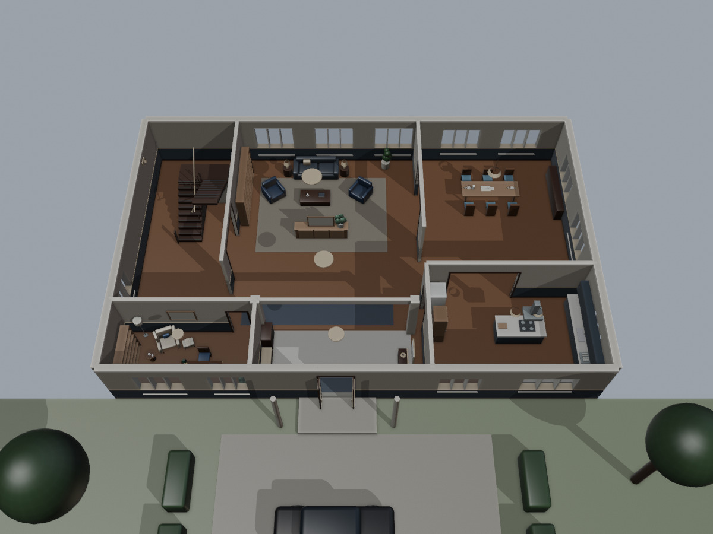

回整合模型檢視器
哈德斯家 v2.4 完整住宅
二樓外框補齊至一樓同範圍，保留樓梯與院內黑車。主角房、天奧房、書房、共用起居區、兩間未指定住戶的備用房、衛浴、家務與收納空間都已實際建入同一份GLB。
開啟住宅模型 下載 GLB
本版依小說與使用者指示推測整棟住宅，新增房間不是原文明定設定。原文明確線索：整齊臥室與學生用品、院內黑車、天奧早餐看報紙與主角吃麥片。沒有增設新的家庭成員。舊 v2.3 鏡位只適用舊版，本頁另提供新版鏡位。
格式驗證0錯誤；11段動線抽樣通過。檢查圖採平色幾何照明，透明玻璃視為通透面，未驗證正式折射與反射；沒有演員動畫。
鏡位A（8鏡） · 鏡位B（4鏡） · 設計與檢查摘要
一樓：起居、早餐與新增閱讀工作角
